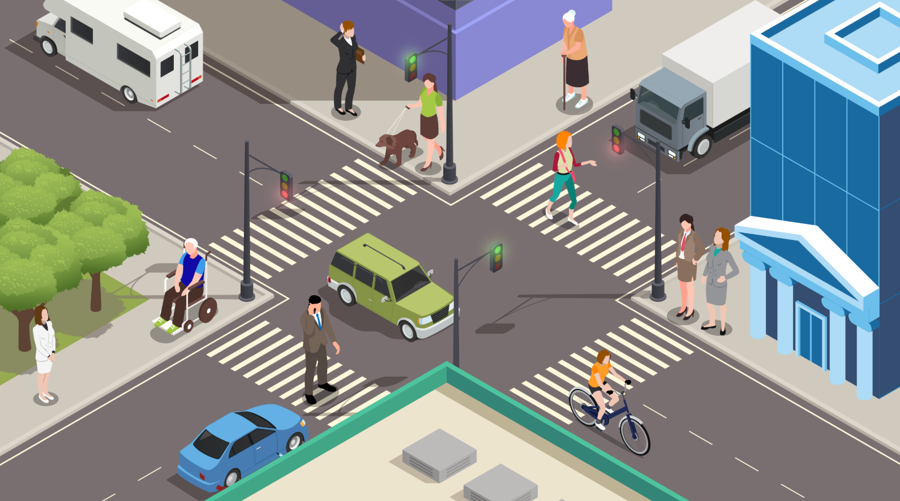
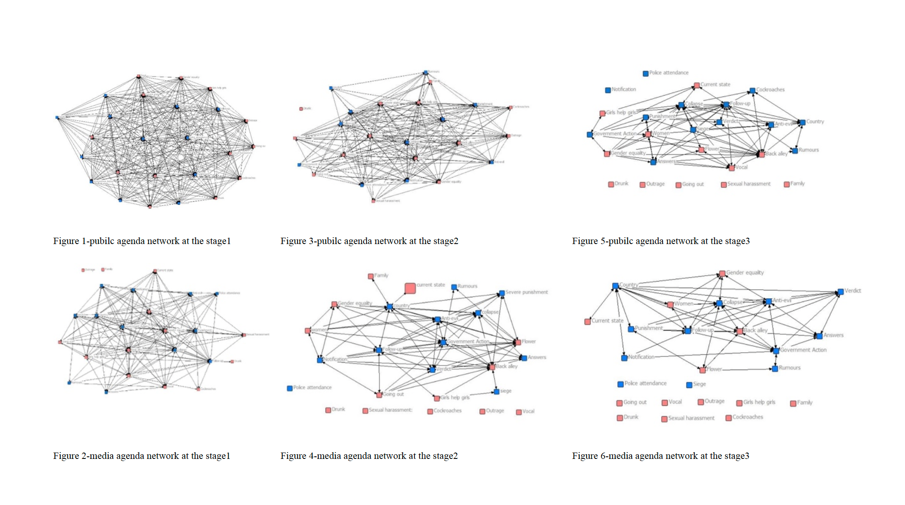
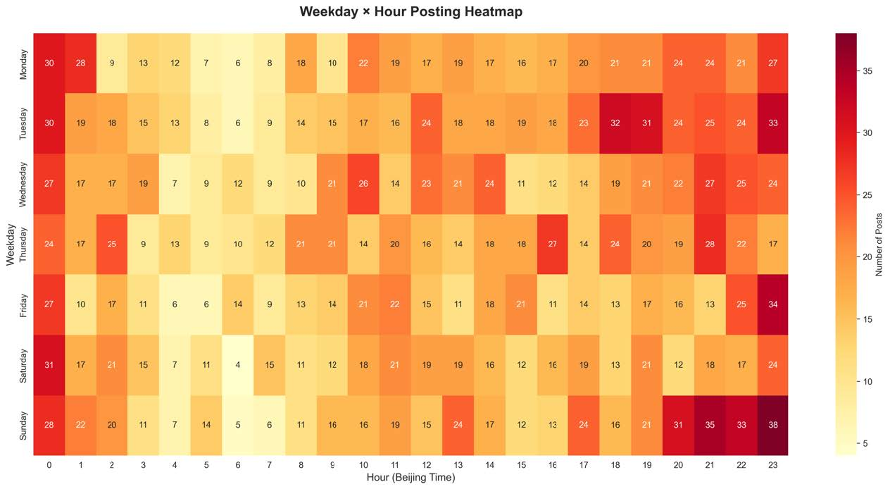
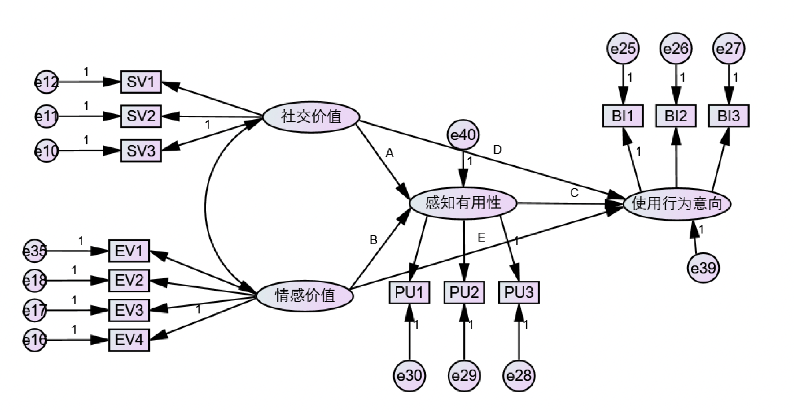

Portfolio
Yang Fang
Question-led. Method-driven.
Research Focus on computational communication, social science of AI & AI for social science, gender studies and data visualization.
M.A. in Journalism & Communication at Fudan University.
B.A. in Data Journalism at Communication University of China.

Data Journalism

Anxiety and Hope: Women's IVF Journeys Through Data and Stories
Inside the IVF cycle, data meets lived experience. This project documents what women endure—physically and emotionally—while trying to become mothers, revealing both the anxiety that defines this journey and the hope, solidarity, and female strength that sustains it.
Longlisted for the 2022 China Data Content Annual Case Collection; Semi-finalist, 2022 China Data Journalism Competition.
Indie Dreams, Real Struggles: Inside Game Development Reality
While China's indie game developers dream of the next breakthrough hit, most face brutal economic realities. This investigation uses data and storytelling to expose the gap between indie gaming ambitions and the financial struggles that define the scene—revealing who these creators are, how they fund their dreams, and why they persist anyway.
Excellence Award, 2023 China Data Journalism Competition.

Retirement Delayed: A Deferred Farewell
As China enters an era of accelerated population aging, delayed retirement has become more than a policy adjustment: it is a deeply personal question about work, aging, fairness, and security. Drawing on Weibo sentiment analysis, policy text analysis, questionnaires, interviews, and international pension data, this project explores how people respond to China's gradual retirement-age reform and what the policy reveals about the future of aging societies.
Conference Papers

What makes gender-based violence a (less) prominent issue? A dynamic analysis of network agenda setting based on the China Restaurant Assault
A dual-source study of newspapers and Weibo that maps gender issue salience across media and public agendas. It shows how agenda-setting and partisan sorting combine to suppress gender-violence framing in China.
Accepted for IAMCR 2023 and presented in the Gender and Communication section.

Does my suffering have a name? A computational text analysis of Chinese political depression discourse on X
A computational analysis of political depression in China using 2,979 tweets. It combines BERTopic, GPT-4 emotion classification, LIWC, and toxicity metrics to show political depression as a distinct affective infrastructure.
Accepted for ICA 2026 in the Political Communication division.
Other Works

Urban Consumer Behaviour and Trust in Traceable Agricultural Products
Using three-stage stratified PPS sampling (N = 1,085), TwoStep cluster analysis, and an extended Technology Acceptance Model validated via SEM/AMOS (11 hypotheses, 9 confirmed), the study identifies four socioeconomically differentiated consumer segments and quantifies the drivers behind their adoption behaviour.
National Second Prize, Chia Tai Cup National Market Research Competition.